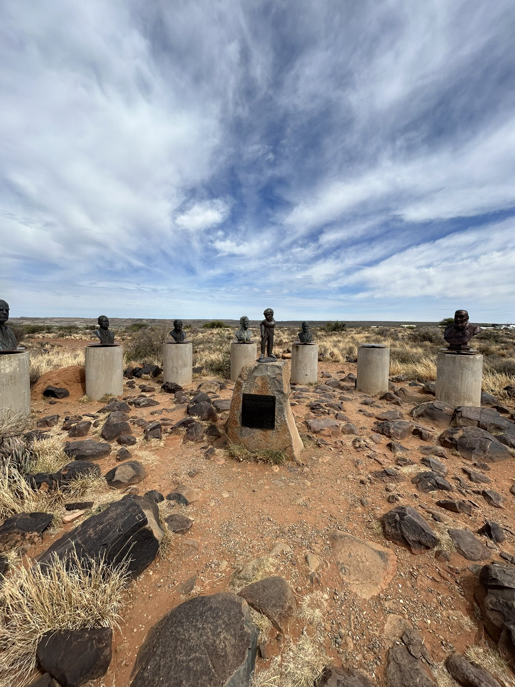
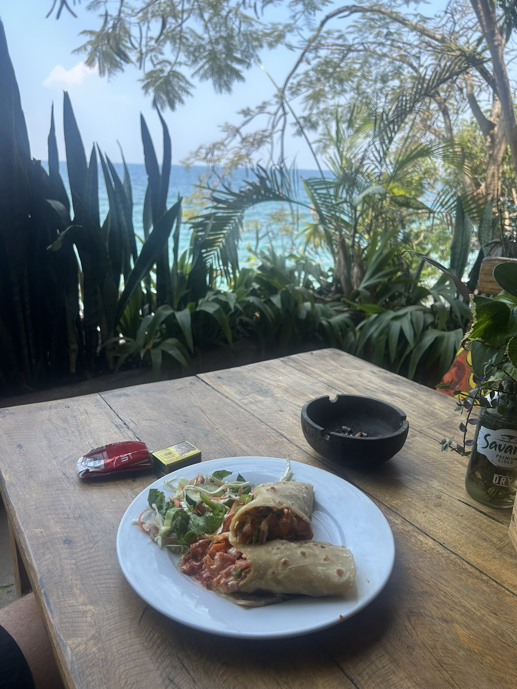
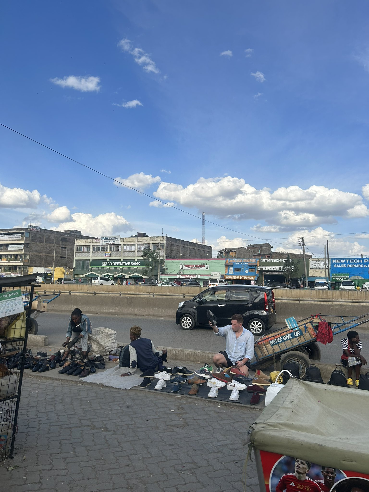

Tate Brown · At Home & Abroad
Photographs from the Road
A few scenes from my travels in Africa.







Select a photograph to take a closer look.
There's more on the way. I'm also working on a newsletter about Africa.

Presenter & producer · A curious eye on the world
Tate Brown · At Home & Abroad
A few scenes from my travels in Africa.



Select a photograph to take a closer look.
There's more on the way. I'm also working on a newsletter about Africa.